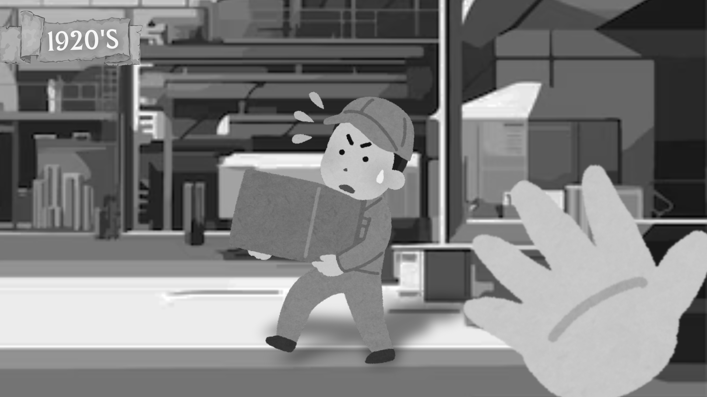

Situação 1:

Você observa que um trabalhador está visivelmente exausto devido à sua rotina de trabalho sobre a administração tradicional, que frequentemente ignora suas necessidades pessoais e de bem-estar. Não é possível fazer com que ele pare, sem que seja descontado do seu salário. O trabalhador te explica que se seu salário vir reduzido, ele não conseguirá pagar as contas. O que você faria?
ㅤㅤㅤㅤ